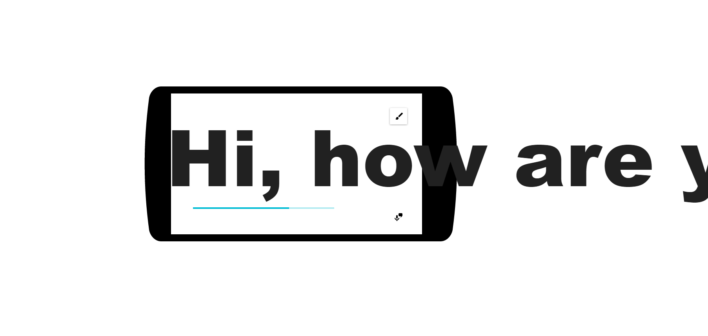
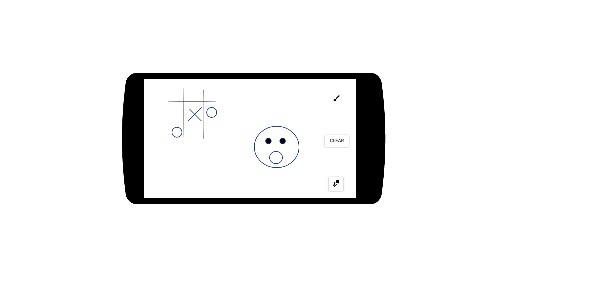

This is the first page that the users will be seeing.
There are two buttons that can be tap:
Top right's icon (a brush) is to trigger drawing board mode.
Bottom right icon (a mic with a speech bubble) is to trigger speech to text mode.

Ξ∞×
When the user tap and hold the bottom right icon, the app will notify the user to speak through the microphone and start showing words when the user speaks.

Ξ∞×
When the user tap on the top right button, user can use their finger or a stylus(maybe) to draw some simple sketching. A clear button will also appear in between the buttons.
Ξ∞×
When the user tap on the top right button, user can use their finger or a stylus(maybe) to draw some simple sketching. A clear button will also appear in between the buttons.